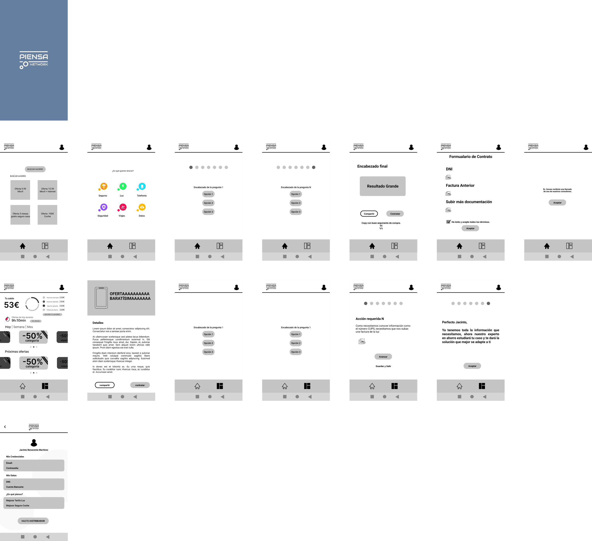
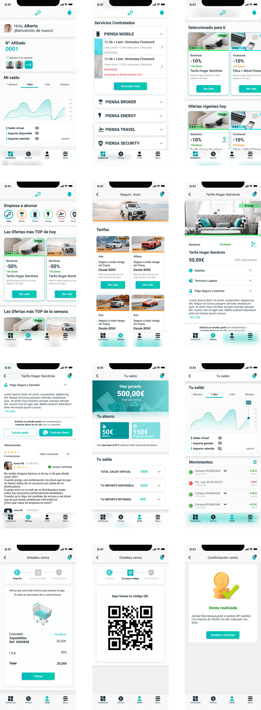
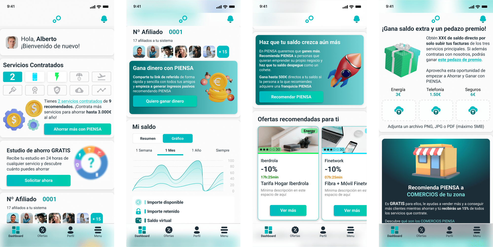

PIENSA
| Duration | 09/2020 - 09/2022 |
| My role | Product Designer |
| Team | María Sanchis (prod. designer), Anyelson Espinoza (dev), Eliuvis Matos (dev) |
| Methodology | Lean UX |
Designing the future OF utilities
The world is going on demand. Everything we used to own is now getting acquired via subscription. A very attractive business model where more and more players come to get their share of the pie. With everything turned into a utility, you can tell the utilities market has become a low-margins competition where consumer acquisition feels like a headache.
At the same time, consumers feel overwhelmed with so many options to choose among while they ask for cheaper prices, easier ways to get what they want, no permanence, no hiding clauses and convenient and personalised services from their utility provider.
As a relief for both, PIENSA emerges with a disruptive solution for both sides where companies can keep their margins low by reducing acquisition costs and users can access the offers that best fit them whilst not only saving money but earning it.
The two sides of the coin
- To reduce consumer acquisition costs
- To streamline customer service
- Cheaper prices
- Easier ways to get what they want
- No attachment
- No hiding clauses
- Advisable & personalised services
So... how did we solve the problems of both sides of the coin? Using the Lean UX methodology!
LEAN UX
methodology
- Listening & Research
- Early Research
- Understanding our target
- Benchmarking
- First Approach
- Information Architecture
- Navigation maps
- User flow maps
- Design System
- Animations
- Prototypes and mock-ups
- Creating a conversion machine
- Surveys
- Hotjar
- Analytics
Think
Listening & ResearchThe first step in Lean UX is thinking. Here we need to understand the background and motivations of our users as well as the market fit. In this case there are two types of users. Businesses and above all, consumers.
Early researchWe could say much of the primary research for this project was already completed. The founders of PIENSA had extensive experience in the sector, engaging in regular conversations with customers and partner companies. According to their insights, the platform would meet the needs of both groups. Nonetheless, we conducted a thorough review of all the references provided by the founders. Unfortunatelly, I cannot disclosure it here.
Understanding our targetSave money and look for opportunities
MotivationsHis low income
FrustrationsRising prices of everything
Carlos (Charlie) is a 22-year-old male who works as an administrative at a small company in Spain which is badly paid. Carlos Completed vocational training and secondary education.
His family status is addapted to the new realities. Whilst he has a family he meets sometimes, he is independent but shares a flat with roommates who he usually socialices with.
As for interest or hobbies, Carlos enjoys Marvel, anime, streaming services, and socializing with friends and flatmates.
His technological proficiency is advanced. Comfortable with digital tools and platforms, he dislikes phone calls but uses messaging apps extensively.
Reduce costs and increase income
MotivationsMaking her business more profitable
FrustrationsUnderstanding contracts and
managing them efficiently
Arantxa is a 34year-old business owner who runs a small beauty saloon where 2 more people work. This allows her to earn around 3.000€ net / month. She was never fond of studying but got 2 vocational training certificates.
Arantxa’s family status is relatively complex. She was married to a man she got a child with but that did not work out. Currently, she is married to another man she has a daughter with. These 2 kids are her motivation and biggest care during the week.
As for interest or hobbies, it is true she has not much time to waste. Running a business and taking care of 2 children with 2 fathers is often hard. Nonetheless, she squeezes weekends hanging out with her couple or friends.
Her technological proficiency is basic. She uses smartphone apps at a basic level, and prefers phone calls and WhatsApp for communication.
Stay informed of best products
MotivationsCompare utility products easily
FrustrationsFraudulent practices
from utilities providers
Miguel Ángel is a 52-year-old male who works as an accountant at a local administration in Spain. He has been in this position for the last 18 years and knows he will retire here. A rutinaire job he masters, the tranquility of stability and a good salary sound like a good trade off to him.
His family model is tradional. He’s been marry to his wife for 28 years, have 2 children and is always closely connected with both his family and his wife's family.
As for interest or hobbies, Miguel Ángel is a passionate about football. That has been his passion since he was a kid. Additionally, he enjoys family time, dining out, and attending theatre shows.
His technological proficiency is basic. He started using technology due to job requirements, but is open to learn. His favourite channel for communications is email.
We had some references to use as inspiration. Despite we studied all of them, we focused on the 3 main ones, which were Amazon, Glovo and Wallapop. This is a summary of the key points we got from our research.
When synthsising our findings, we realised we could categorise in 3 acts the in-app UX of these 3 references. Before the sale, during selling and after sale.
- Before the sale they want users to feel welcomed and easily find what they look for or even what they may like.
- During the sale they want users to feel confident and empowered with their purchase.
- After the sale they want users to feel satisfied and predisposed to come back.
Let’s delven into details:
Before the sale
Products are displayed in a clear and organised interface, with crisp images and detailed descriptions.
The Amazon app is personalised by previous searches and purchases. This allows users to easily find products that match their interests and preferences.
The Amazon app is personalised by previous searches and purchases. In addition, users can also find the best products and offers of the moment
With wish lists users can remember and track the products they like. Moreover, lists can also be shared with friends and family as a gift idea list.
Ratings and reviews by others help users to make informed decisions.
During the sale
Allowing multiple payment options, such as debit cards, and e-wallets protects users and encourages them to buy
the possibility of cancelling orders up to a certain moment gives security to the purchase moment.
Purchases can be completed with just one click within the app since shipping and payment info is stored and kept safe.
A premium account provides access to additional services on some sites, which can also improve shopping conditions
After the sale
Orders are easily tracked with real time information and an arrival estimation
Asking for a refund or exchange is easy and fast to do within the app.
Chatbots feature are well developed and covers many questions that can arise at any stage of the selling process. Yet, the app also gives access to customer’s service team for further assistance.
Loyalty programs reward users for their purchases, making future acquisitions cheaper
Make
First approach
Piensa founders had a clear vision of th flow model in their mind. It had to be super simple, and super easy. They thought of having only 3 flows:
- Ask for information.
- Acquire.
- Become a seller.
The concept seemed sound, with the entire process guided by a wizard to minimize friction. However, when they reviewed the initial wireframes, they realized that their idea needed to be more intricate. Both usability and aesthetics had to be enhanced.
After the disappointment of the initial approach, everything was revisited. Merely having a vision was not sufficient for designing a system intended to revolutionize the entire utilities market. We had to establish clear concepts and develop an architecture and usability model that could withstand the test of time and scalability
Information Architecture
The business was in a rush to kick off. Due to this urgency, our design team had to blend the need for a multimedia graphic universe with the product creation process. Consequently, we launched the first version of the design system with its foundational elements and the few components necessary for the initial stage. Yet, some were refined later.
An expandable design system
Foundations:
Content:
PIENSA's goal is to help people save money on their utility bills and earn money by contracting services and referring the platform to others. To achieve this, PIENSA must speak in an informative, transparent, and user-friendly way. There is a need to clearly and concisely explain the features and benefits, as well as how users can take advantage of them.
The content should be written in a way that is easy to understand, without any unnecessary jargon or technical language. Users should feel like they can trust the information presented, and that they are getting a fair deal. It's important to avoid any harmful or misleading messages, and to be upfront about any potential drawbacks or limitations of the platform.
In terms of tone, the content should be friendly, approachable, and helpful. Users should feel like they are being spoken to by a trusted advisor who has their best interests at heart. By adopting this content style, PIENSA can establish itself as a reliable and trustworthy platform that users can depend on to help them save money and earn rewards.
Color:
The colour scheme for this project needs to be broad and include all the sub-brands colors and identifications. Also a dark profile was needed to appeal the more techie community that could be interested. Besides, some combiantions for background and multimedia messages had to be considered. As a result we got a very comple colour scheme that includes those ones for the most common and frequent stituations.
Spacing:
Regarding spacing and unlike the normal design systems we opted for a 5px basis. We employ most of the multiples of 5 (10, 15, 20, 25, 30, 40, 50, 60, 75, 80 and 100). By this we can adapt to the different situations on the digital and fisic world without difficulty for calculating spaces.
Typography:
The brand and sub-brands typography came already set by the company as the Audiowide Bold font. So we had to adapt to it. Firstly, we used it for all headings but with time we relieved it for special occations
Iconography:
Icons can be found all along the product and on social media posts as well. Because of that there is a need for a broad icon spectrum that allows icons to be in positive and negative. In addition icons should be stroke icons but also filled icons to ensure the best of the uses.
Animations
Hover over the squares to play the animation
Protoyes and mock-ups
Prototypes and mock-ups entered the scene later. To keep this case study concise, I have summarized some of the subsequent features and user flows in these mockups.
 Creating a convertion machineWe used behavioural design to redefine the look of the app and transforme it into a convertion machine. You can see below how the current Dashboard looks like after applying principles of psycology such as curiosity gap, cognitive disonance, sunk cost bias, goal gradient effect and many more.
Check
During all this time working for the PIENSA project, decissions have been data oriented. We have conducted minor UX research and the marketing team has tracked down the evolution of the project. Due to NDAs I cannot show much of the research conducted trough these years but I will sintetize the main UX research we have done so far which I led.
Throughout the PIENSA project, decisions have always been data-oriented. My team conducted extensive UX research and the marketing team has been tracking down the evolution of the project. Despite restrictions due to NDAs, I can provide a summary of a usability test I could led in 2022.
Usability testing
ContextThe Piensa app allows users to hire utilities at the best price and generate income through an affiliate network. The MVP version is open to the public, but no prior research has been conducted since it went life. The goal is to test the app with real users to confirm its suitability for the target audience and align it with their usage patterns.
Research goalThe app lacked prior research since its launch, necessitating an evaluation of its real-world usability and value.
- User Satisfaction: To assess users' satisfaction with the service hiring process.
- Navigation: To evaluate the intuitiveness and smoothness of navigation.
- Offer Searching: To measure the ease of finding offers.
- Onboarding Process: To clarify the clarity of the onboarding process.
- Profile Filling: To assess the appeal and ease of completing user profiles.
Restricted due to NDAs
Methodology:Type: Moderate Usability Study
Mode: In-person
Location: Alicante
Date: 15/06/2022 - 24/07/2022
Responsible Parties: Pablo Elices & María Sanchis both as researchers
Number of Participants: 12
Session Duration: 45 to 60 minutes
Technologies to be Used: PIENSA app (pre-launch version) and PIENSA app (launched version) on both iOS and Android platforms.
P1- Male, 22 years old, student, limited budget, has made utility contracts.
P2- Female, 29 years old, professional, extensive knowledge about branding, has made utility contracts.
P3- Male, 24 years old, professional, deeply concerned about hidden contract terms, has made utility contracts.
P4- Male, 29 years old, professional, extensive knowledge about branding, has made utility contracts.
P5- Male, 30 years old, computer engineer, vast knowledge and experience in product, has contracted energy and networks.
P6- Male, 33 years old, professional, has made utility contracts, prefers doing it in person/at a store.
P7- Female, 38 years old, professional, frequent use of mobile phone, has made utility contracts, prefers doing it online.
P8- Male, 41 years old, professional, limited technology knowledge, prefers doing it in person/at a store.
P9- Female, 32 years old, unemployed, concerned about hidden contract terms, has made utility contracts, prefers doing it in person.
P10- Female, 56 years old, professional, difficulties for using technology, prefers doing it in person/at a store.
P11- Male, 20 years old, student, has made utility contracts, prefers doing it online.
P12- Male, 52 years old, professional, extensive technological knowledge,has made utility contracts, prefers doing it in online.
Restricted due to NDAs
Conclusions:- Users like the graphical interface but not the photos.
- Some users find certain required processes cumbersome.
- Users find confusing some parts of the app.
- Users find a better organization of the content.
- Performance issues were noted by some users.
- Errors were observed in the app.
- Users prefer proactive contracts.
- Users want to know how their data is used.
The results
An award-winning company
While I don't have specific figures to discuss the project's impact, I can share this Facebook post from our social media team celebrating the three awards we won in 2022:
Franchise of the year 2022
Biggest income of the year 2022
Biggest growth of the year 2022